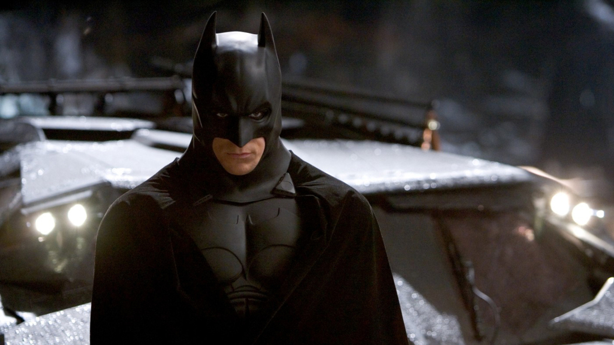
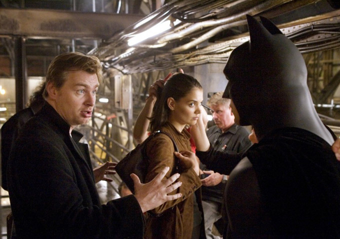

Batman Begins แบทแมน บีกินส์
เนื้อเรื่อง
มหาเศรษฐีพันล้านแห่งเมืองกอตแทม ผู้ซึ่งเสียบิดามารดาไปจากการถูกสังหารโดยโจรจี้ปล้นตั้งแต่อายุแปดขวบ เขาออกท่องเที่ยวไปในโลกกล้วเป็นเวลาหลายปีเพื่อค้นหาวิธีที่จะต่อสู้กับความอยุติธรรม เมื่อเขากลับมาสู่เมืองกอตแทม ในยามค่ำคืน เขาได้กลายเป็นแบทแมน ผู้ที่คอยปกป้องเมืองอย่างลับ ๆ จากเหล่าร้ายต่าง ๆ
เรื่องราวเกี่ยวกับจุดกำเนิดของตำนานยอดวีรบุรุษแห่งรัตติกาลเพื่อปลดปล่อยตัวเองจากฝันร้ายที่พ่อแม่ของเขาถูกฆาตกรรม ทายาทมหาเศรษฐี บรูซ เวย์น ออกเดินทางสู่โลกกว้างเพื่อค้นหาวิถีในการต่อสู้กับความอยุติธรรมและสร้างความหวาดหวั่นให้แก่เหล่าอาชญากรที่เบียดเบียนผู้บริสุทธิ์ ดูหนัง Batman Begins ด้วยความช่วยเหลือจากอัลเฟรด พ่อบ้านผู้ภักดี ตำรวจตงฉินอย่าง จิม กอร์ดอน และพันธมิตรผู้แสนดีอย่างลูเซียส ฟอกซ์

บรูซ เวย์น จึงหวนคืนสู่กอดแธมซิตี้ พร้อมปลดปล่อยตัวตนอีกภาคหนึ่งของเขาภายใต้ชื่อ แบทแมน วีรบุรุษสวมหน้ากาก ผู้ใช้ทั้งความแข็งแกร่ง สติปัญญาและสรรพาวุธยุทโธปกรณ์สุดไฮเทค เพื่อต่อกรกับเหล่าร้ายชนิดแบบระทึกและสะใจ
การผลิตและกำกับ
แบทแมน บีกินส์ ผลิตโดยบริษัทวอร์เนอร์บราเธอร์ส ด้วยงบประมาณการสร้าง 150,000,000 ดอลลาร์สหรัฐ กำกับโดยคริสโตเฟอร์ โนแลนด์ และประพันธ์บทภาพยนตร์ร่วมโดยโนแลนและเดวิด เอส. โกเยอร์ โนแลนด์กล่าวถึงการทำงานครั้งนี้ว่า เขาตั้งใจที่จะนำเสนอภาพยนตร์แบทแมนในรูปแบบใหม่ โดย "จะสร้างเรื่องราวที่เป็นต้นกำเนิดของตัวละคร ที่ไม่เคยถูกเล่าที่ไหนมาก่อน" และยังจะนำความเป็นมนุษย์และความเหมือนจริงมาใช้เป็นพื้นฐานอีกด้วย ตามที่เขาได้กล่าวว่า "โลกของแบทแมนจะต้องมีพื้นฐานมาจากความเป็นจริงที่สามารถรับรู้ได้ ร่วมสมัย และฝืนจินตนาการความเป็นวีรบุรุษเกินจริง" ส่วนโกเยอร์กล่าวว่า เป้าประสงค์ของภาพยนตร์เรื่องนี้คือการทำให้ผู้ชมสนใจทั้งตัวแบทแมนและบรูซ เวย์น อย่างเท่าเทียมกัน